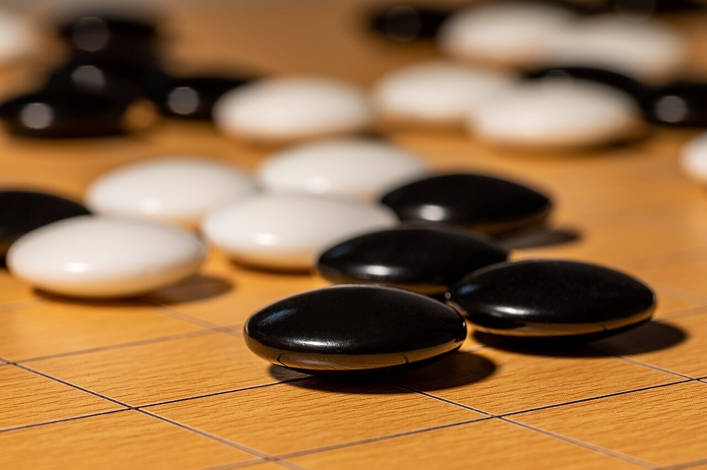
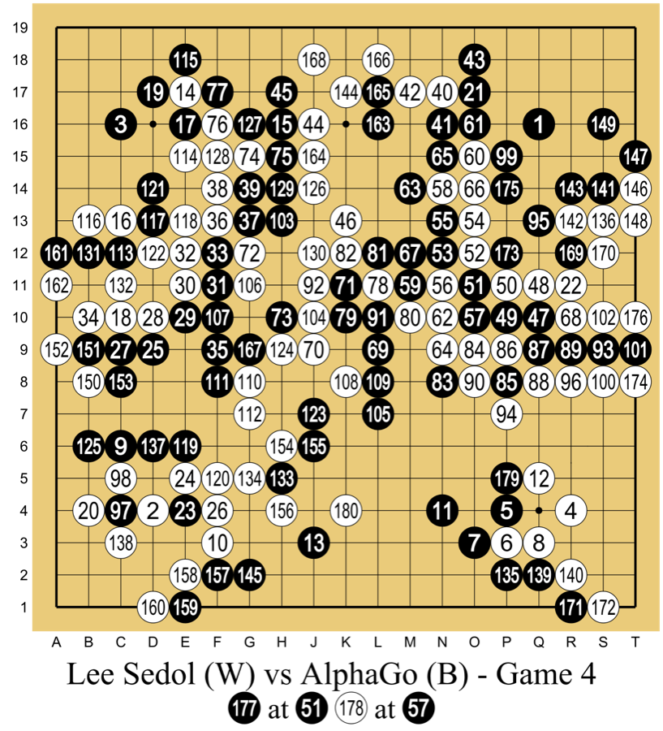
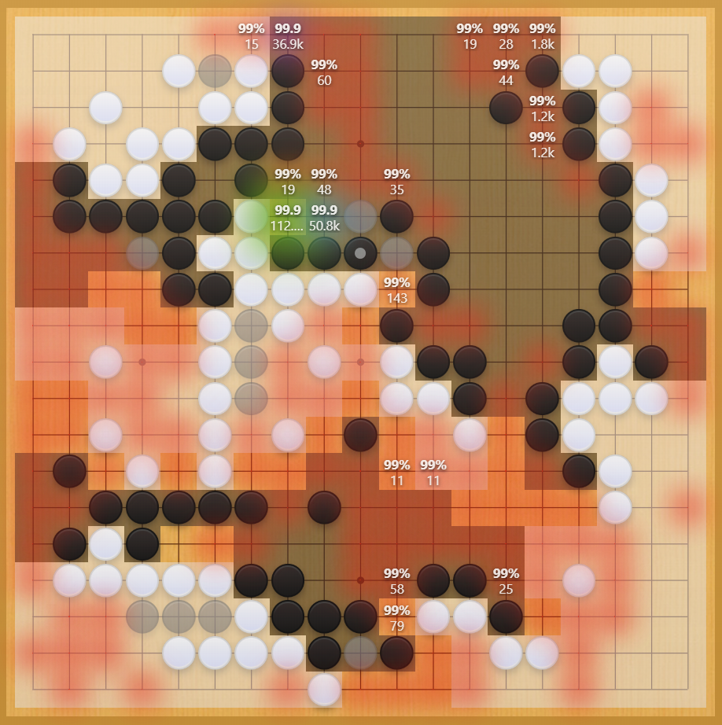
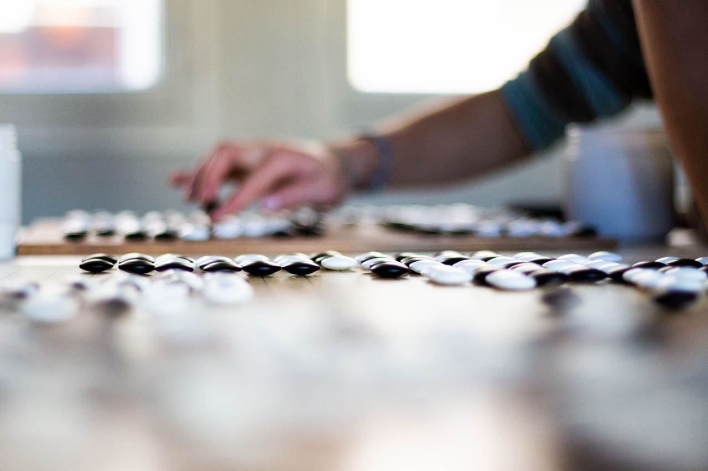

後 AlphaGo 時代：職業棋士怎麼跟 AI 相處
01圍棋完了嗎？
我有個同學下圍棋，業餘六段。有天閒聊，我虧他：「李世乭都被 AlphaGo 打倒了，那你們現在下圍棋是在幹嘛？」
本來以為他會很尷尬，結果他講了一大串：職業棋士現在怎麼跟 AI 練棋、直播怎麼看勝率、定式怎麼被改掉，講得頭頭是道。
圍棋界已經走過一輪了。我相信軟體工程師，也會經過這樣一番轉變。
2016 年 3 月，AlphaGo 在首爾 4 比 1 贏了李世乭，很多人說圍棋完了。十年過去，圍棋沒有完，職業棋士也還在，只是工作方式整個變了。
02兩個相反的反應

李世乭，2019 年退休
「就算我變成第一名，還有一個打不贏的存在。」他在 2016 年那五盤贏了一盤，第四盤第 78 手，是人類在正式比賽中唯一贏過 AlphaGo 的一盤。
PNAS 研究，2023
580 萬手分析 1950 到 2021 年職業棋士的棋。AI 出現之後，人類下棋的品質變好了；以前沒人下過的新手變多，品質也比較高。
同一件事，有人覺得沒意義了，但整體來看，人類因為 AI 變強了。差別在於：把 AI 當對手，還是當教練。
03五個對照
一學 AI 棋譜 ↔ 讀 AI 寫的 code
職業棋士每天跟 AI 練棋，背 AI 的變化、模仿 AI 的下法。
但世界第一的申真諝說，他一開始照抄 AI 的手，常常打成亂戰，很容易輸。不懂為什麼，到了 AI 沒教過的局面就不會下。
AI 給的寫法常常比我們習慣的好，值得學。但看不懂就貼上去，上線出事的時候就收不了。
看懂最快的方法：先寫一個測試把它的行為釘住，再改一個地方，看哪裡會壞。
學的是「為什麼這樣寫」，不是把它貼上。
二勝率表 ↔ 測試和監控

直播畫面旁邊有一條 AI 勝率；下完覆盤，開 AI 看哪一手掉了多少。檢討從老師的感覺，變成每一手都有數字。
但勝率只說「這手不好」，不說為什麼。解說棋士的價值，變成把 AI 的判斷翻成人聽得懂的話。
我們的勝率表是測試、型別檢查、上線後的監控。每改一次，就知道有沒有掉分：測試紅了、錯誤率升了、頁面變慢了。
沒有這張表，AI 改得再快，你也不知道是變好還是變壞，最後是自己半夜被叫起來。
勝率表是保護自己的：改壞了早點知道，就不用半夜救火。
三定式被改寫 ↔ 「測試太貴」這條前提變了
早期點三三，以前教科書說開局不要這樣下。AlphaGo 下了改良版，職業棋士也開始跟著下。
但 2025 年一篇看了四百年棋譜的研究發現，AI 對開局的影響不大，也沒有持續很久。大部分基本功還是一樣。
以前不寫測試，最常見的理由是「沒時間」。現在 AI 幾分鐘就能補一組測試，這條前提變了：測試可以讓 AI 多幫忙寫，省下來的時間是自己的。
基本功不變：測什麼、哪裡最容易出事，還是人決定。
寫 code 變便宜了，寫測試也變便宜了。
四AI 作弊 ↔ 用 AI 也要有一套東西看局面
2020 年，一位 13 歲的韓國職業棋士在網路比賽偷用 AI，贏了一位九段，因為下法跟 AI 太像被發現。她承認了，被禁賽一年。
我們的規則剛好相反：AI 可以用。圍棋怕的是「看不出是誰下的」，我們怕的是「出事了不知道是哪裡壞的」。公司資料能不能貼給外部 AI，照公司規定。
這不是要一個人扛。merge 前有三關：測試、preview、上線後的監控，是流程幫大家一起擋，不是靠某個人眼睛特別利。
AI 可以幫你下，但要有一套東西幫你看局面。
五讓二子贏 KataGo ↔ 人還在進步
2026 年 7 月，申真諝在讓二子的條件下，三盤 2 比 1 贏了 KataGo。韓國的解說說，跟 AI 一起練已經變成日常，人類才能一直進步。
是讓二子，AI 還是比人強；但差距在 AI 的幫助下變小了。
AI 不會變弱，我們也不用跟它比誰寫得快，更不用為了追它每天加班學新東西。
挑一兩件重複、煩人的事交給它，省下來的時間拿回來。
不用跟 AI 比，讓它幫你省時間就好。
04AlphaGo 的兩個網路
AI 寫 code，等於給了我們一個很強的 policy。但「這樣改到底對不對」的 value，要靠我們自己建：測試、review、監控。
05新的定石

聽同學講完，我最大的感覺是：圍棋沒有因為 AI 變簡單，是變得更強了。新的定石一直出來，大家照著練，整體水準越來越高。
軟體也會一樣，而且新的定石已經在長出來：
- 交給 AI 之前，先寫好怎麼驗收。不少開源專案給 AI 的規則檔，第一條就是先寫測試定義「完成」。
- review 分流：核心改動人審，外圍改動交給 bot。
- 驗證變成瓶頸：2026 年一篇整理業界座談的論文說，AI 讓產生 code 變便宜之後，瓶頸從「寫出來」移到「確保它是對的」。
再來是需求。人的慾望是無限的。寫 code 變便宜，需要的軟體不太會變少，比較可能變多：以前做不起的小工具、一次性的小系統，現在都做得起了。經濟學叫 Jevons 悖論：東西變便宜，用量反而變多。
這件事還沒有定論。但我相信以後一定還會有新的轉變、新的需求；懂需求、懂哪裡會出事的人，工作不會消失。
不用太焦慮。新的定石會出現，我們一起學就好。
結尾
圍棋界花了十年，從「完了」走到「AI 是每天的教練」，還長出了新的定石。我們大概在第二、三年。
你負責的東西，有自己的勝率表嗎？改壞了，多久會知道？早點知道，下班就能安心一點。